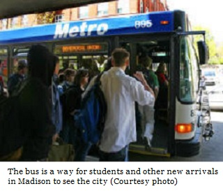

As the main source of transportation in Madison, the bus system in Madison becomes a substantial part of students everyday life. Being both cheap and convenient, the bus system covers most areas that a student would ever need to go. However, it still needs some major improvements, especially during the winter, when more people start taking the bus because of the snow and overload the system.
The best part of the bus system is its convenience. Personally, I found myself relying heavily on the Madison Metro buses for any sort of outdoor activities, including going to class, dining, shopping and visiting friends. Most students choose to live in one of the campus dorms, and there are bus stations near all dorms. Any student could reach the station within 10 minutes, thus get to anywhere on the campus in around 25 minutes.
The bus that is most often taken by students is definitely the No. 80 bus, which circles around the campus, covering from the east-most side of the campus (State Street) to the west-most side (UW hospital). During weekdays, theres one bus every 15 minutes until around 7 p.m., when the schedule switches to one bus per hour. On weekends, theres only one bus per hour.
Besides the No. 80 bus, other buses that I frequently take include the No. 7, No. 10 and No. 4 buses. The No. 7 bus travels to the West transfer point. From there, one can take the No. 67 bus or No. 68 bus to the West Towne Mall, a huge shopping center that has everything a student possibly needs, from clothes to electronics to furniture.
Alternatively, some students choose to go to Target for furniture and daily needs, which is located west of campus and can be reached by taking the No. 10 bus. If one wants to go to State Street or further down the capital, the No. 4 bus will be the perfect choice. Just like my friend told me when I first came to Madison, there was absolutely no need to own a car in Madison. The bus will take you anywhere you want, and it is free for a UW student too Bring your Wiscard to the office in the Lucky building and you can get a free bus pass, usable on any Madison metros.
Although the system is convenient and free, it still needs some significant improvements.
First of all, the No. 80 bus only goes in one direction. This means that if you are in the Memorial Union and you would like to go to Union South, youd have to go all the way around lakeshore area, to the UW hospital and back and finally to the destination. It will take more than 20 minutes and it is usually even faster to just walk than taking the bus.
Secondly, there are too few buses in the weekend and in the evening during the week. Many students have labs which end after 7 p.m., and it is a pain for these students to wait for another forty minutes for the bus, especially during the winter, when the temperature drops.
Thirdly, the usual four-buses-per-hour schedule is insufficient during winter times. When the snow covers the road, most people choose to take the bus, which significantly overload the buses to a point which one needs to wait for over an hour for a bus thats not full. I used to live in the Lakeshore area, and I recall countless times that I went to the bus station an hour and a half before the class starts yet still get late, because all the buses are full.
Despite these issues, the bus system is still helpful and convenient. I would recommend new students to use the buses daily and save themselves from a lot of trouble.

 Madison Area Bus Advocates
Madison Area Bus Advocates